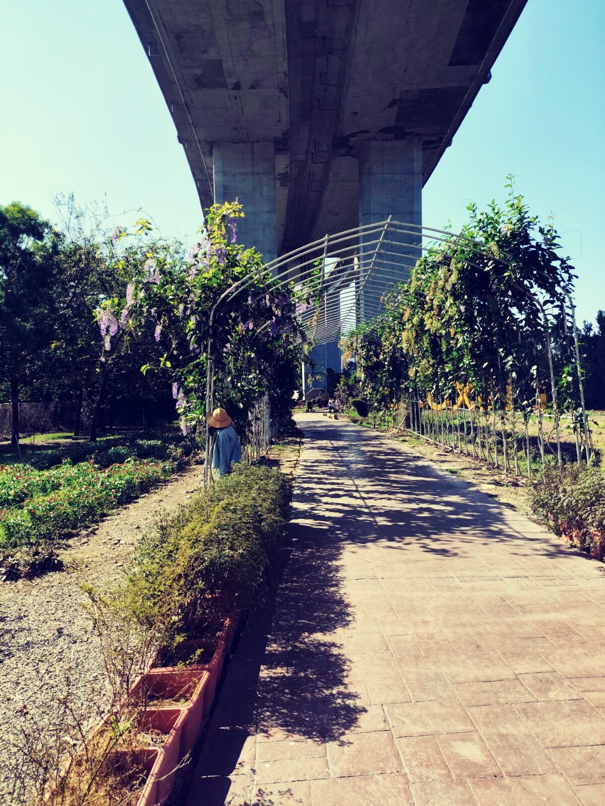
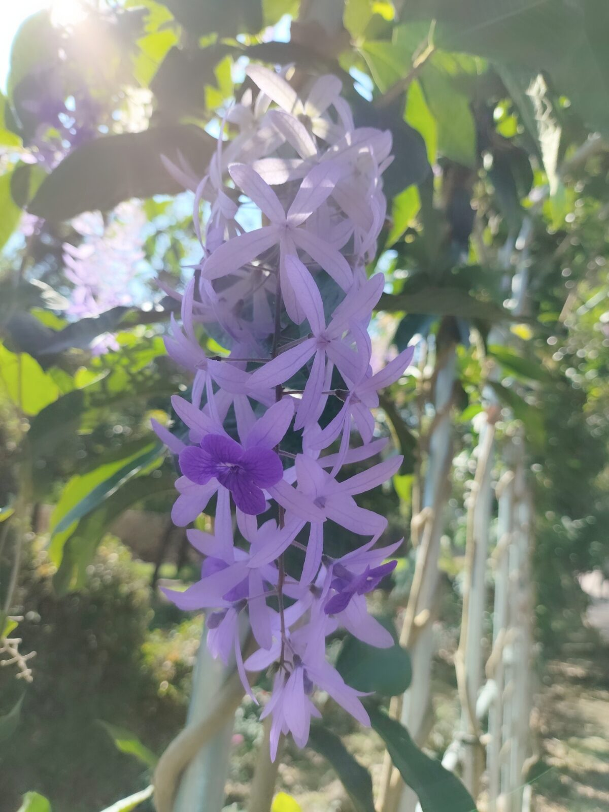
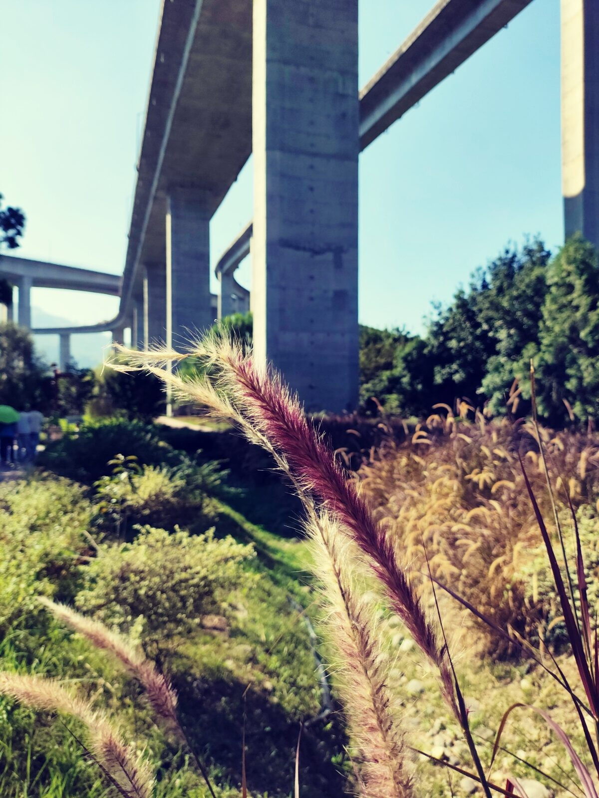
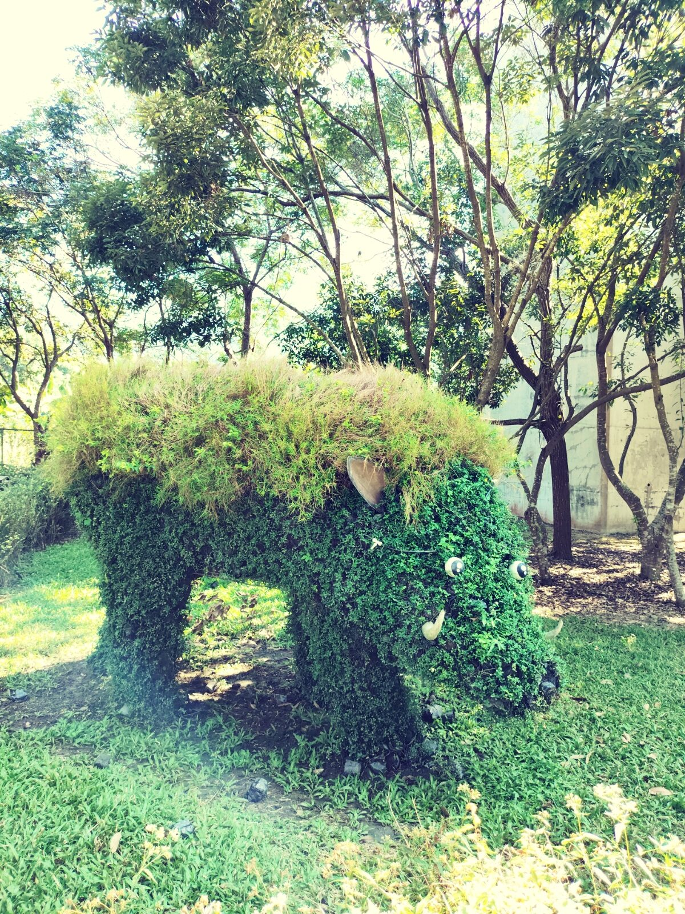
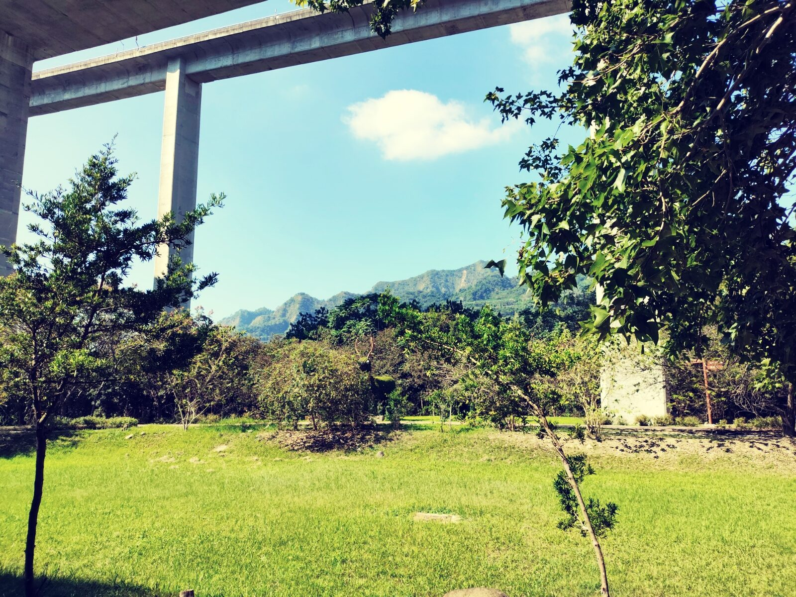
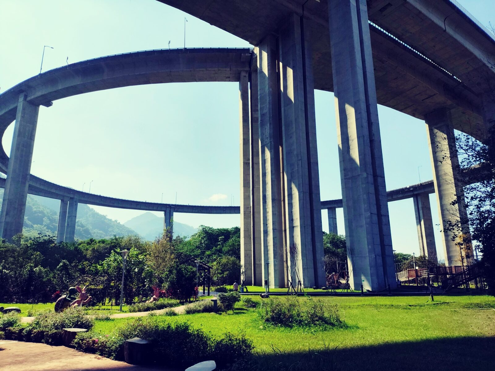
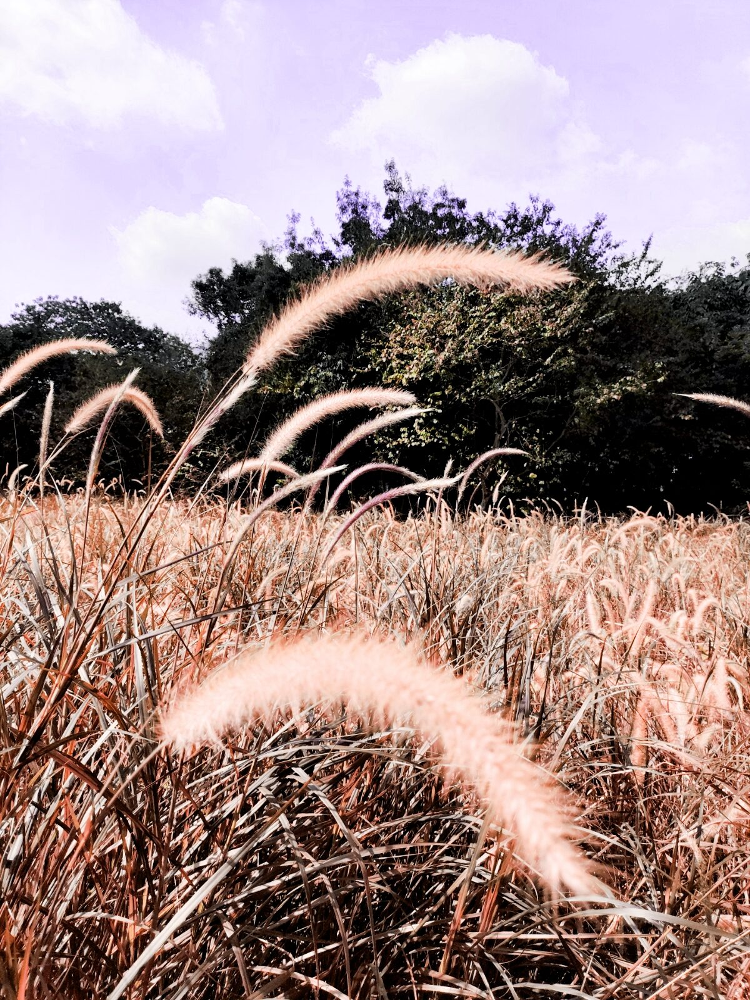
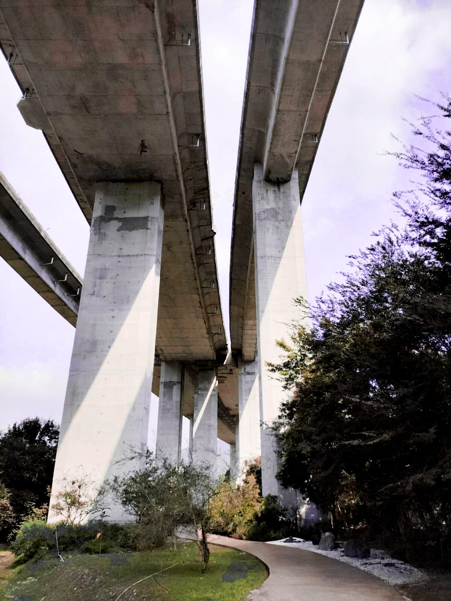

走進國道六號橋下的花園，步道兩側是紫與綠交織的錫葉藤，藤架拱成一條長廊。頭頂是混凝土橋體，腳下是花草與陽光。橋墩大約有八層樓高，一根一根立著，像城堡裡的巨大柱子——人站在下面，忽然覺得自己變小了。


好幾種蝴蝶在花間飛舞。成片的紫葉狼尾草被風吹得輕輕晃，和背後灰色的橋柱形成有趣的對比——一邊柔軟、一邊堅硬，一邊是季節、一邊是工程。


花園裡有山豬、鹿等用植物編成的動物造景，像一座小小的森林樂園。孩子會停下來看，大人也會笑。草地上陽光很好，遠方的山峰從橋墩縫隙露出來，天很藍。

往前走，高架道路轉出一道弧線，橋墩一排排立在綠地裡。高架上的天際線，和遠方連綿的山峰，正好湊成一幅畫——上面是車，下面是人；上面是速度，下面是慢步。

再往深處，紫葉狼尾草幾乎鋪滿視野。風一吹，整片草地像波浪一樣輕輕翻過去。站在裡面，橋的聲音變遠了，只剩草尖與天空。

最後抬頭看：橋底與橋墩把天空切成幾道窄縫，光從縫裡漏下來。國姓這一段「橋聳雲天」，不只是路上的名字，也是橋下這座花園給人的感覺——高處有路，低處有花，兩邊都成立。
PLACE NOTE / 橋聳雲天・國姓
位於南投國姓鄉國道六號高架橋下綠地，園區有步道、花廊、紫葉狼尾草與綠雕造景，可遠眺山景。免費開放，停車與動線請以現場為準；夏季注意防曬與補水。
文章與照片為本次旅行的個人記錄。